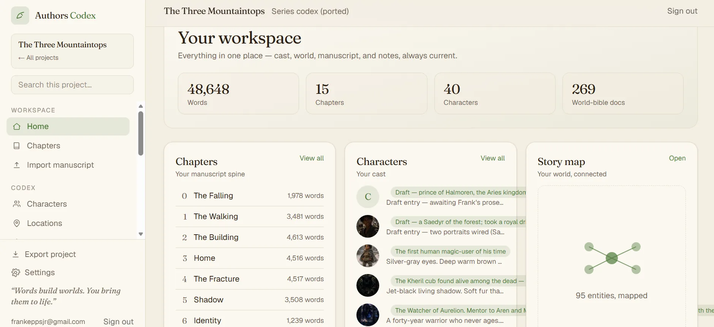

A clear offer on every screen
Your services, the people you help, your actual service area and a direct next step. Responsive pages tested at phone and desktop sizes, with readable content and keyboard-accessible controls.
A website should do more than describe your business. I build sites that connect inquiries, booking and the next step in your operation, with a clear scope and ownership from the beginning.
Work directly with Frank Epps. Atlanta-metro client visits by arrangement; remote delivery is also available.
For local service businesses, owner-operated companies and entrepreneurs who want to work with the person doing the build.
Your services, the people you help, your actual service area and a direct next step. Responsive pages tested at phone and desktop sizes, with readable content and keyboard-accessible controls.
Forms and scheduling connected to the people and tools responsible for the next action. Payments, customer portals and AI features are added only when the agreed scope needs them.
Page titles, descriptions, crawlable content, a sitemap and accurate business information. These make the site easier to understand and discover; they do not guarantee first-place rankings or AI recommendations.
The code, domain and operating accounts stay yours. You review a working preview before release and receive documentation and a walkthrough. Support is optional and agreed separately.
Authors Codex is a personal product I built with a relational workspace, manuscripts, linked story data and AI tools. It demonstrates the interface and integration work behind the website offer, not a client testimonial.

Actual personal-build interface. See more examples of my work.
I can inspect an existing site before recommending a replacement. Broken forms, confusing handoffs or a missing integration may need a targeted repair, not a complete rebuild.
Yes. I visit clients at their businesses across the Atlanta metropolitan area by arrangement. We can also work remotely. I do not advertise a walk-in office.
Often, yes. I inspect the platform, code and current workflow first. The diagnosis determines whether repair, integration or replacement is the right next step.
Yes. The agreed deliverables include your code, domain and operating accounts, with a documented handoff. Third-party hosting, payment and software costs are identified before approval.
No honest builder can guarantee that. I can provide crawlable pages, accurate local-service information, technical checks and a way to trace inquiries. Rankings and recommendations remain outside my control.
Bring your current website or the business process you want the new one to support. We will scope the useful next step.